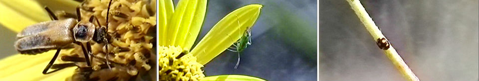
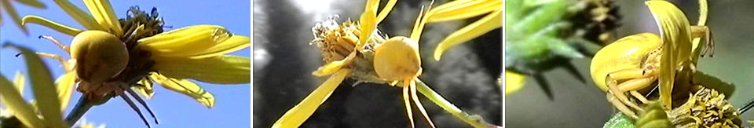
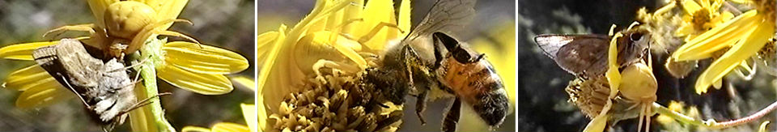
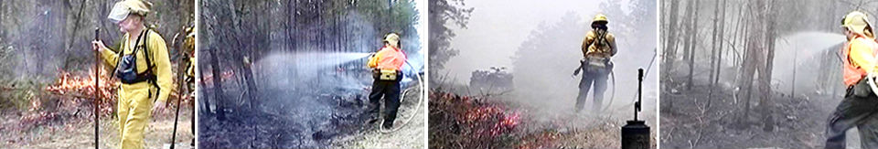

Helianthus schweinitzii, known by the common name Schweinitz's sunflower, is a perennial wildflower endemic to the Piedmont physiographic province of North Carolina and South Carolina. It is classified in the Sunflower Family (Asteraceae). Nationwide it is one of the rarest plants in the United States, but within its largely diminished range it is found among utility and highway rights-of-way in North Carolina and South Carolina. There are only about 90 known remaining populations, many containing less than 40 plants each. It was listed as a federal endangered species on May 7, 1991.
Schweinitz's Sunflower grows from 1 to 4 m tall. Its stems are usually solitary, branching only at or above mid-stem. It flowers for about two to three weeks in early October. It is named for Lewis David von Schweinitz (1780-1834), a Salem, North Carolina clergyman and botanist who discovered the species. It was first described by botanists John Torrey (1796-1873) and Asa Gray (1810-1888).
The endangered population of sunflower is frequented by a whole assortment of pollinators, a diverse profile of which was photographed for the first time as part of rendering a comprehensive natural history of the species, contributing to the scientific literature including research conducted by Professor Lawrence Barden at University of North Carolina at Charlotte.

Among the photographed insects were a thriving population of Misumena vatia (Flower Crab Spider). The species is renown for its ability to transform its color by producing a yellow pigment into the outer cell layer of its body to match the petal of the flower it utilizes as a hunting platform.
Flower Spider position itself in various poses for an ambush attack on unsuspecting pollinators and insects.

A selection of prey species ranging from moths to bees captured by the Flower Spider on the endangered Helianthus schweinitzii are shown below.

It is believed by some that Schweinitzii's Sunflower formerly occupied prairie-like habitats or Post Oak-Blackjack Oak savannas maintained by some degree of disturbance. Historically, this was provided by fire and/or native grazing animals such as Elk and American Bison, but these species were never common in North or South Carolina, so it is much more likely that suitable habitat was maintained by periodic controlled burns by native Americans. Today carefully controlled fires act as the last life-line for maintaining the much needed habitat of the last remaining populations of the species.


Scoring for a conceptual time-line with placeholder visuals depicting a prehistoric eagle.

RESEARCHED, PRODUCED AND SHOT BY: SHERVIN AZAD ARYA
Illuminating Minds Media™ © 2012-Present. Site and Logo Design: Shervin Azad Arya